APPENDIX A U25N Shell Programming¶
To program the U25N flash, an Alveo™ programming cable is required. Refer to Alveo Programming Cable User Guide (UG1377) to connect the Alveo programming cable to the U25N maintenance connector. The Vivado® tools must be installed on the server to which the Alveo programming cable’s USB port is connected. For more information, see Vivado ML Overview.
Entering into U-Boot Mode¶
Note: There is no need to performing the first step when flashing the shell image for the first time.
Connect a USB cable to the SmartNIC.
a. Open a command line terminal and run the minicom command with sudo.
b. Before running minicom, verify the serial port setup configuration using the following steps:
i. Pull up the settings using the -s option.
sudo minicom -s
This should bring up a colorful display listing the different settings.
ii. To configure the serial port setup, arrow down to Serial port setup and press Enter.
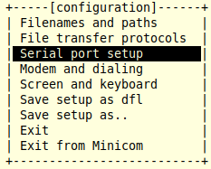
iii. To modify the different configurations, press the key corresponding to the setting. For example, press A to modify the path to the serial device. Press Enter to save the parameters for the setting.
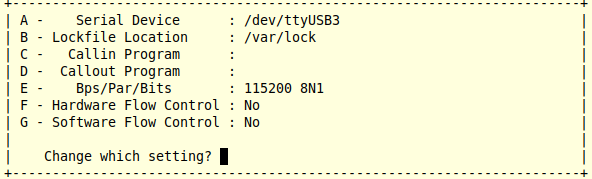
Make sure the above mentioned configuration is applied for E,F,G fields.
iv. After you have saved the configuration, arrow down and select Exit to exit from minicom.
v. Some logs will appear after executing the minicom command. These can be ignored. Run the command as shown in the following figure.
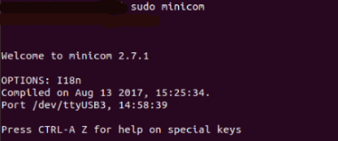
c. When prompted for a login and password, enter the following:
- login: root - password: root
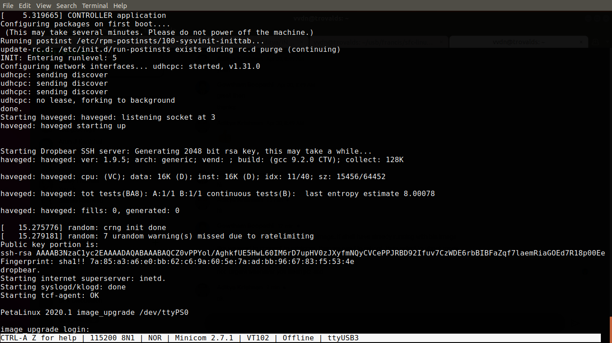
d. After logging in, do a reboot.
The system starts executing the reboot command.
e. When it displays autoboot, enter any key to get into U-Boot mode.
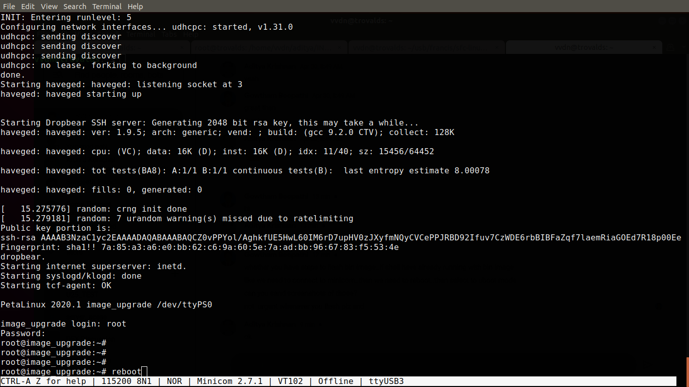
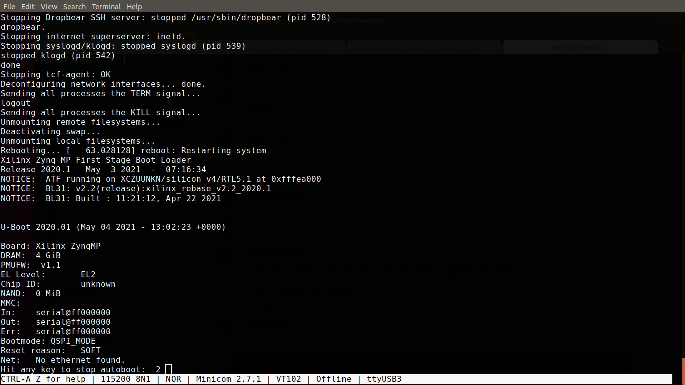
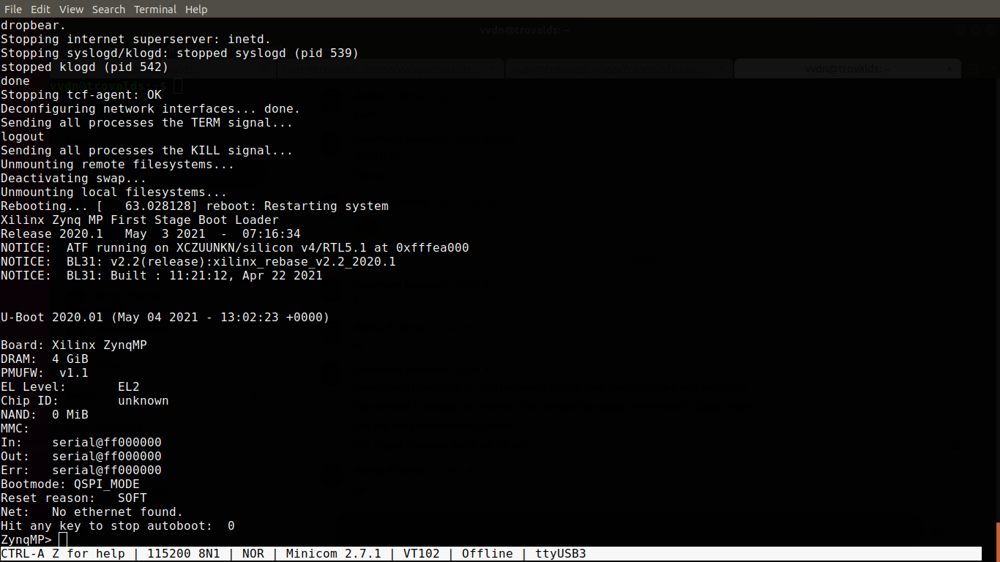
Close the terminal after the above state occurs.
As a root, run the xsdb command from the Vivado tools directory in the <install_directory/Vivado_Lab/2019.2/bin> path.
a. Type the
connectcommand and check the target using thetargetcommand. Make sure that you get core 0 in running status and other cores in power-on reset.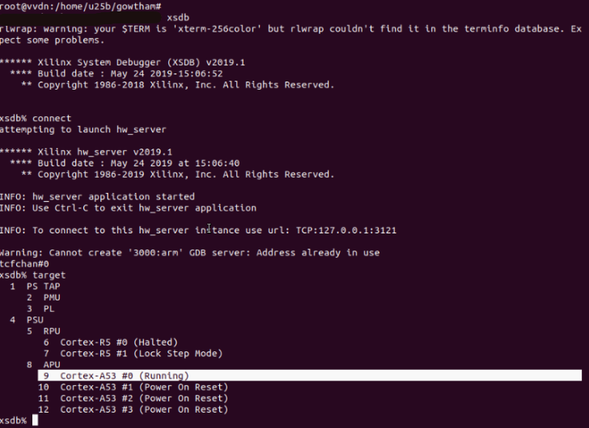
b. Exit xsdb by entering exit in the xsdb console.
Launch the Vivado tools. For example, you can enter the following:
sudo <path>Vivado_Lab/2019.2/bin/vivado_lab
This launches the Vivado software which is used to flash the FPGA image. After the Vivado software opens, carry out the following steps:
a. After opening, click Open Hardware Manager in the Quick Start tab.
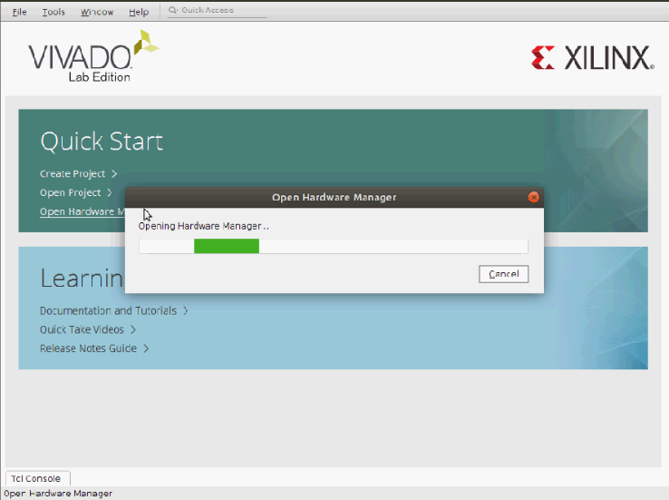
b. Click Auto Connect.
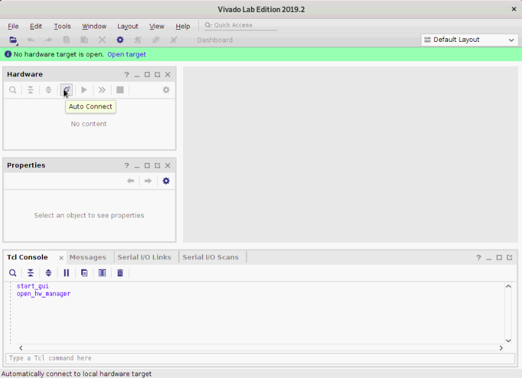
c. Verify whether the U25N SmartNIC is detected properly.
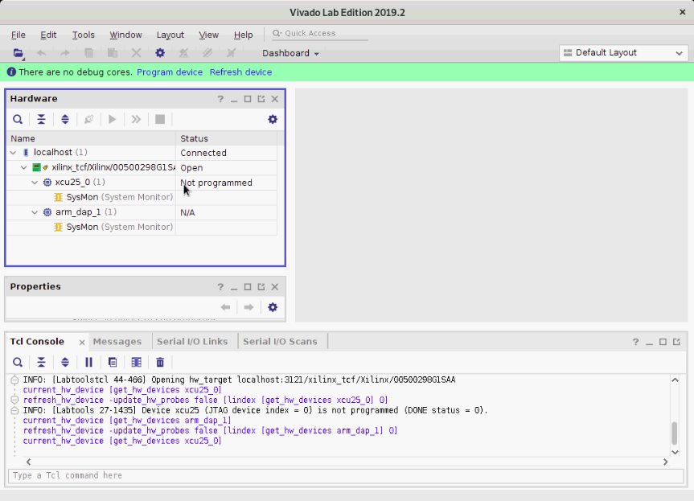
d. Select the SmartNIC as shown below, right-click, and select Add Configuration Memory Device.
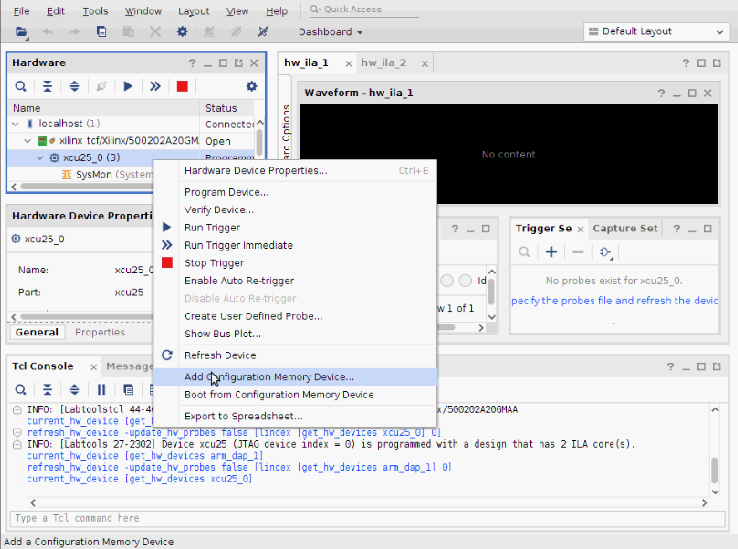
e. Search by clicking mt25qu01g-qspi-x4-single in the Search tab.
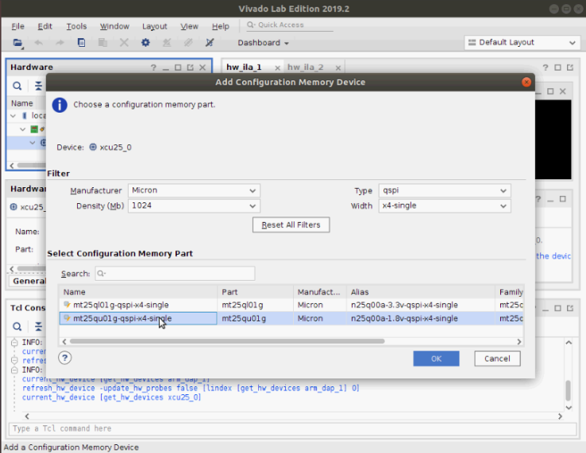
f. After making the above selections, a dialog box appears. Click OK and continue.
g. Select the configuration file (
BOOT.BIN), and first stage bootloader file (fsbl_flash_prog.elf).h. Uncheck Verify under Program operations. It will be time consuming otherwise.
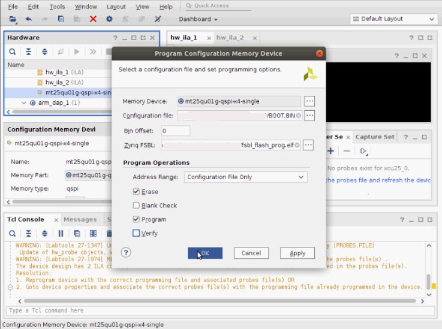
i. Click OK. The system begins programming.
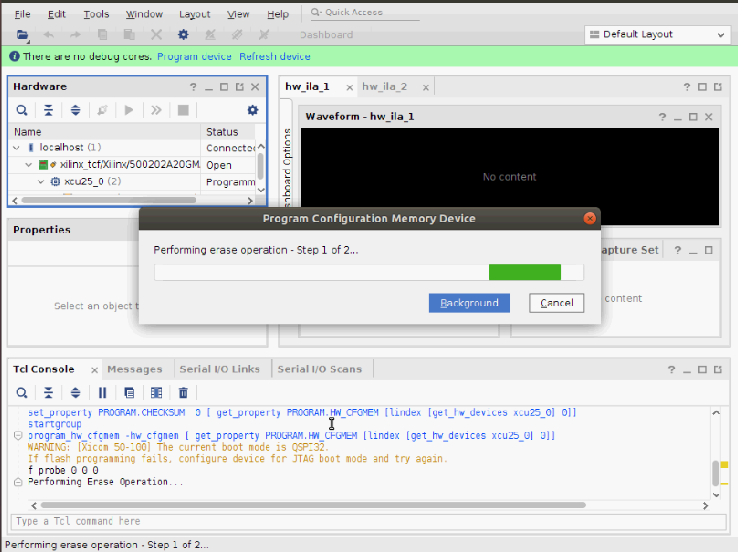
j. The programming takes 5 to 10 minutes. Upon successful completion of programming, the following output log appears. Click OK.
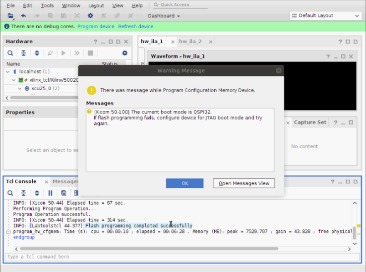
k. If you exit the Vivado tools after the flash programming completes, the following logs appear. These can be ignored.
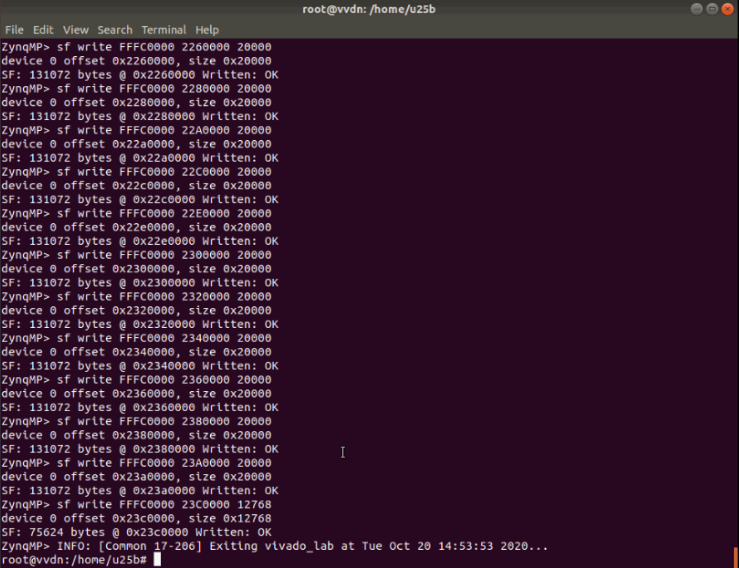
Power cycle the server (Power OFF and Power ON).